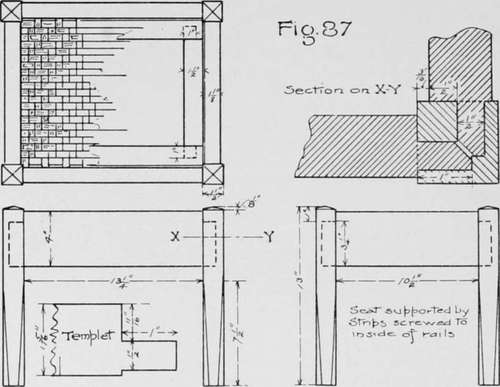
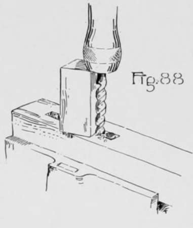
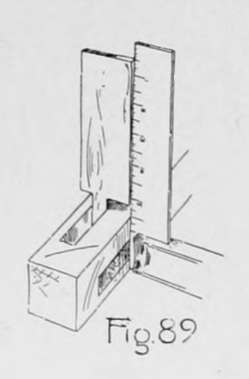
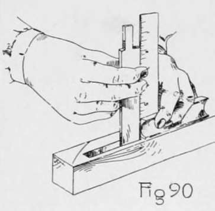

Chapter IX. Furniture Making - Closed Mortise-And-Tenon Construction
Description
This section is from the book "Beginning Woodwork At Home And In School", by Clinton Sheldon Van Deusen. Also available from Amazon: Beginning Woodwork At Home And In School.
Chapter IX. Furniture Making - Closed Mortise-And-Tenon Construction
In this chapter the application of the fundamental principles to furniture making is continued, and a good working knowledge of construction involving the closed mortise-and-tenon joint should be gained. This method of construction is in general use, and with good workmanship is unexcelled for strength.
Cane-Top Stool
The material required consists of four pieces of oak 14"xl¾"xl¾" for the legs, two pieces 16"x4¼"x1¼" and two pieces 13"x4¼"x1¼" for the rails, two pieces 12½"x1½"x⅞" and two pieces 10"x1½"x⅞" for the supports for the seat, two pieces 14"xl^'xl" and two pieces 10½"xl¾"xl" for the seat frame, a piece of hard maple 8½"x1½"x¼" for the templet, ten 1½" No. 10 flat-head bright screws for fastening the supports for the seat, 55 yards of pith cane, a small bottle of liquid glue, a 2-oz. bottle of fumine, a 2-oz. bottle of strong ammonia, and about 1 oz. of four parts boiled oil and one part hard-oil finish.
Cane-Top Stool.
The tools to be used for the first time are the cabinet scraper and the needle for weaving the seat.
(a) Plane the four pieces for the legs by the rules for planing to dimensions. (31, 30. 30.)
(b) Clamp these four pieces in the vise, as in Fig. 77, and measure the distance (7) from the top of the leg to the upper end of the motise, and from the point just located, measure the length (32) of the mortise.
With the beam of the try-square against the working face of the front leg, make light marks on each edge that is formed by a working face and joint side.
(c) Remove the pieces from the vise, and place the try-square on one of the legs with the beam against the working face and the blade on the joint side, its edge being even with one of the last marks made. Now make a knife line as long as the width (15) of the mortise, its nearer end being as far (1) from the working face as the nearer edge of the mortise is to be from the inner edge of the leg. Using the same point on the edge of the leg, draw a knife line of the same length, and in a similar manner, on the working face, its nearer end being the same distance from the joint side as the end of the line just drawn was from the working face. In the same manner as above, make two similar knife lines even with each of the seven remaining points that were located on the edges of the legs.
(d) Set the gage to the distance ( 1 ) that the inner edge of the mortise is to be from the inside of the legs, and with the gage-block against either the working face or joint side, gage lines between each pair of knife lines that indicate where the ends of the mortises are to be. Change the set of the gage to the distance (33) the outer edge of the mortise is to be from the inside of the leg, and in a similar manner, make another gage line between each pair of knife lines. This completes the laying out of the mortises.
(e) Using the 3/8" auger-bit bore eight or nine holes within each of the spaces just laid out, to the depth (7) the mortise is to be cut.
This may be done by the method shown in Fig. 85, but may be accomplished more rapidly by cutting a block the length of the exposed part of the bit when the hole is to the required depth, and placing it beside the bit when boring. When the chuck strikes the top of the block, as in Fig. 88, the hole is to depth. The wood remaining in the mortises is to be removed by a method similar to that explained in Chapter VIII, 1. By working at the same time on both mortises that are in one' leg, the chisel may be entered in one while trimming the bottom of the other to its correct depth.
To test the mortise while chiseling it out, make from the thin piece of hard maple, an accurate templet of the size and form shown in Fig. 87, and use it as in Fig. S9. It should not be forced into the mortise, but if used carefully and thoughtfully, the part to be chiseled out may readily be determined. To ascertain whether the end of the mortise is being cut square with the surface, use the try-square and any straight-edge, as the joint side of the templet. Fig. 90.
(f ) To form the point on the top of each leg, proceed as follows : With knife and try-square, draw a light line around each leg 1/8" from its upper end; then with the pencil and gage used as in Fig.37, on the upper end of the leg draw a line through the center parallel to the working face, and a similar line parallel to the joint side. Clamp each leg in the vise in a vertical position and block-plane a chamfer extending from the line on the side opposite the joint side to the line on the end parallel with the joint side. Test to see that the surface of this chamfer is square with the working face. In a similar manner plane a chamfer from the line on the surface opposite the working face to what remains of the line parallel to the working face. Next plane a chamfer from the line on the joint side to what remains of the line parallel to the joint side. Finally plane a chamfer from the line on the working face up to the point which is now formed in the center of the end.
(g) To form the lower part of the legs, first lay out a regular octagon on the lower end as in Chapter VIII, y ; then locate a point on each edge of the leg 7½" from its lower end, and from each of these points, with pencil and straight-edge, draw lines to the angles of the octagon that was laid out on the bottom of the leg. With the jack-plane, take off the wood outside of these lines. In doing this planing, it is desirable to clamp the legs in the vise as in Fig. 71, and it is necessary to protect the edges from injury while they are clamped in this position. To do this, place pieces of soft pine between the edges and the jaws of the vise.
Continue to:
- prev: Furniture Making-Keyed Construction. Part 3
- Table of Contents
- next: Furniture Making - Closed Mortise-And-Tenon Construction. Continued